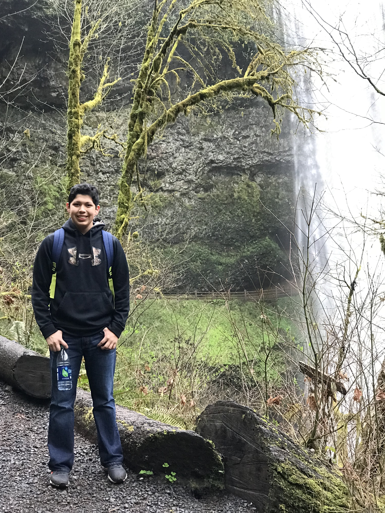

Adrian's Personal Website

Hello, my name is Adrian Perez Gonzalez, and I am currently a Senior at Portland State University, I am studying Computer Science. This is my personal website to show case all the experience I have gained in my time at Portland State University and from previous jobs and internships. Here you can find an About Me page that will give you more information about myself, as well as a few previous projects that I have worked on, and lastly you will find a contact me form if you would like to get more information about me or my work.